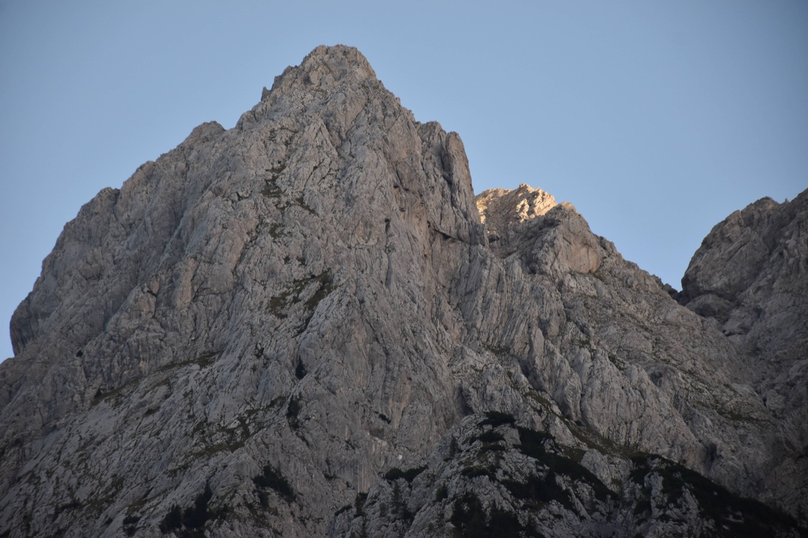
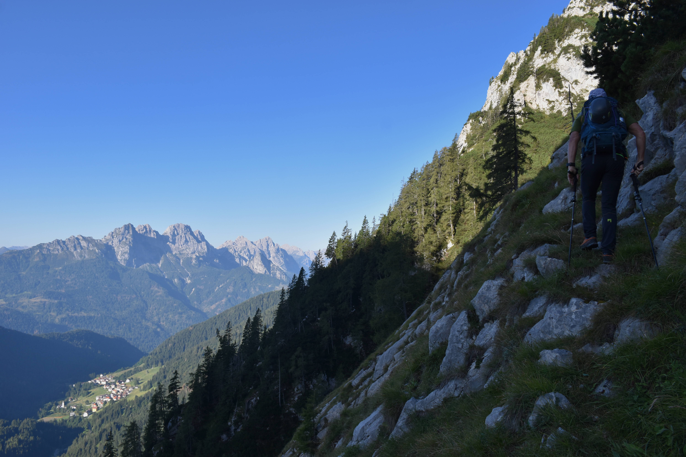

Forcella Mincigòs
NUOVO
Salita per l'Agâr di Róndui e la cresta Ovest, discesa per il versante Est (via Samassa) (09.09.23)

Giro dedicato a Pietro Samassa, leggendario cacciatore collinotto e intrepido esploratore dei suoi monti, guida alpina ante litteram. Per primo mise piede sulle cime dei monti di Volaia.
Seguono le parole del Castiglioni (p.230):
La toponomastica di questa cima è stata oggetto di lunghe discussioni e polemiche, poichè i valligiani di Collina davano il nome di M. Canale a tutto il massiccio dal Sasso Nero al Passo di Voláia, a causa dei numerosi profondi canaloni che ne solcano il versante S. Dal lato austriaco invece solo la prima cima aveva un nome (Seekopf), mentre tutte le rimanenti erano comprese nel nome generico della giogaia (Biegengebirge). Si credette quindi per molto tempo che il nome di M. Canale fosse il corrispondente del tedesco Seekopf e solo l'esplorazione alpinistica di questi monti potè mettere in chiaro che si trattava di due cime ben distinte, separate da una lunga cresta con profonde incisioni e da una grande gola. Il nome locale di Creta Forata deriva dal grande foro, bene visibile anche dal Wolayertal, che si apre nella cresta del monte in prossimità dell'intaglio (o Forcella del Buso) tra il M. Canale e la Creta Forata, assai più vicina a questa che a quello. Questo curioso foro ha un diametro di circa 5 m sul lato italiano e si allarga a forma d'imbuto verso il lato opposto, con un fondo ghiaioso in pendenza e un'enorme volta. E' chiamato il Tangelloch, dalla leggenda di un contadino del Lessachertal che voleva falciare il prato nel giorno di Maria, e quantunque ne fosse stato avvertito continuò ad affilare la sua falce (Tangeln), finche il diavolo se lo portò via; e tanta fretta ebbe Satana di fuggire con la sua preda, che passò attraverso la cresta dei monti, producendo il gran buco, che prese il nome dal misfatto. Pare del resto che questo fosse un'abitudine del diavolo, poichè nelle creste dei Monti di Voláia, come pure nelle Dolomiti di Sappada, simili fori, più o meno grandi, sono molto frequenti.
Già intorno al 1840 un cacciatore italiano saliva fino al gran foro, ma solo nell'agosto 1892 la cima veniva conquistata per la cresta Sud dall'avventuroso cacciatore e guida Pietro Samassa, che anche qui fu primo, come sulle altre vette della catena. Lo stesso Samassa vi guidò poi il 16 settembre 1896 i primi alpinisti G. Baldermann e A. Jaroschek (Mt. 1896, 277; OeTZ, 1897 e 1898, 247; In Alto, 1897, 16 e 1899, 31; AG, 1898, 50). Ancora il Samassa, accompagnato da H. Wödl, il 12 settembre 1902, vi saliva per la cresta O provenendo dal M. Canale per la Forc. del Buso.
A Collina il gran canalone fra i monti Canale e Capolago è detto Agâr di Róndui (agâr ~ solco/canalone, Róndui ~ rombi,tuoni); così ne scrive Enrico Agostinis: Streghe e, beninteso, personaggi consimili d’ogni genere e fattura, giacché quassù era il regno del bestiario extranaturale, tutto insieme proteso a far danno agli incauti o temerari che di giorno osassero avventurarsi ventissù, e di notte ardissero superare l’invalicabile limite della straceàdo, la linea segnata dall’acqua piovana cadente dal tetto di casa. Di giorno confinati nell’Agâr di Róndoi, streghe e mostri scendevano di notte a impadronirsi del territorio e a ghermire chiunque non fosse al riparo del tetto di casa.
... Il bacino di alimentazione dell’Agâr di Róndoi è di dimensioni gigantesche, e oltre alle acque meteoriche raccoglie in gran copia detriti, tronchi d’albero e ogni cosa che la furia degli elementi – acqua, vento, e soprattutto valanghe – trascina a valle. Molti anni fa ebbi la ventura di risalirne il tratto inferiore20, e l’ambiente è davvero impressionante, di grande severità ma allo stesso tempo maestoso, con pareti concave alte decine di metri che aggettano sul fondo del canalone a mo’ di soffitto, salti di roccia inframmezzati da ripiani pressoché orizzontali.
E, naturalmente, nel profondo solco giace tutto ciò che rimane in attesa di essere trasportato a valle dalla prossima piena o dalla prossima valanga: tronchi incastrati, ceppaie, ghiaie. Nell’insieme, una sensazione di grande e incontenibile potenza. Altro che le povere streghe...
Partiamo dal rifugio Tolazzi, da dove si ha una vista privilegiata dell'Agâr di Róndui, mondo d'accesso al Tangelloch. A sinistra il M. Canale e a destra il M. Capolago. Per entrarci dentro i primi esploratori salivano penosamente il canalone fin dal basso; ora si sfrutta la traccia di guerra che contorna la base del Capolago.
Quel costolone a mughi e abeti circa in centro nella foto qui sopra è detto ti Péçs proprio per la posizione insolita su cui si cui si trovano quegli abeti, sull'orlo del canalone. I Péçs sovrastano la parte più bassa del canalone, tristemente conosciuta come "da Orniella", per via ... [della] sciagura che nel 1943 costò la vita alla diciottenne Ornella Cioni. Di ritorno da un'escursione al passo Volaia, dove aveva lasciato la comitiva per scendere sola a valle, la giovane si allontanò dal sentiero spingendosi verso i ripidi contrafforti dei m. Canale e Capolago: vagò per i pendii erbosi e le rocce, fino a precipitare nel baratro.
Dettaglio sul crestone Sud-Est del Canale, lungo quale sale la cosidetta via del Lastròn (via normale secondo il Gaberscik!). Credo che la via che sale da casera Chianaletta per il cengione Sud si congiunga alla cresta tramite quella stretta cengia erbosa sopra quei lastroni ben visibili e citati dalle relazioni; se così è, a quanto dice Agostinis, quel picco da qui quasi invisibile sopra le lastronate è la Vèto.
Arrivati allo spiazzo dove termina la strada, saliamo tendendo verso sinistra, ovvero girando verso sinistra subito sotto le prime rocce. Effettivamente questa volta abbiamo trovato una traccia di animali che sale sostanzialmente lungo un canalino e infine sbuca sulla traccia di guerra alla base del Capolago. Non credo però che si tratti della traccia citata in Trois Neris: quella è segnata molto più "in traverso", e sulla nostra non abbiamo trovato nessun segno di passaggio umano. Comunque un'ottima scorciatoia, pressoché invisibile al ritorno.
I primi brividi iniziano sul traverso sotto rocce del Capolago, per via dell'esposizione notevole su erba.
Su percorso già noto, dopo una delicata fascia rocciosa da superare arriviamo al baracchino di guerra citato dalle relazioni. Questa volta ho cercato e trovato le iscrizioni di guerra, che si trovano pochi metri a sx del baracchino.